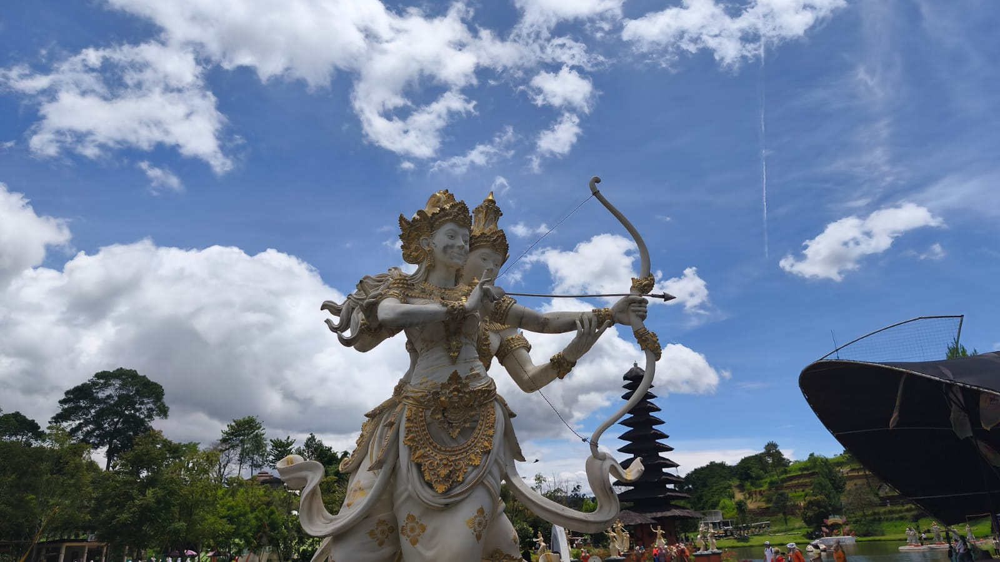
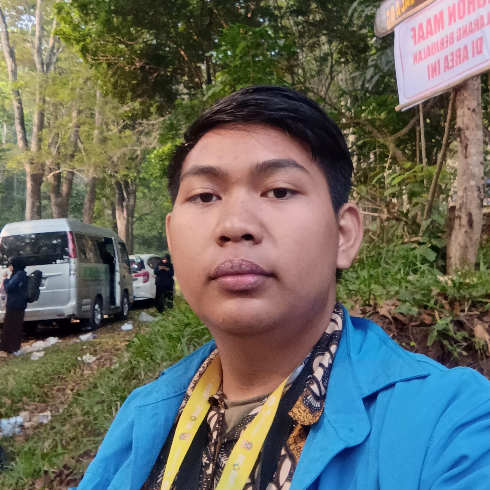

Ulangi, definisikan, dan perbaiki cahaya.
Sebuah kurasi karya santai tanpa pretensi. Merangkum eksplorasi desain visual, coretan sketsa lepas, dan fragmen fotografi jalanan yang sempat tercecer di folder-folder tak bernama.
(Re:Light) — Mengulang proses, menemukan kembali kontras antara gelap dan terang. Sebuah wadah kreatif untuk bereksperimen dengan berbagai medium visual tanpa batasan label.
Sketch Area
Bagian "Semua" Anda bisa mencoret sketsa bebas, mengoperasikan simulasi bidikan kamera jalanan, atau menguji suhu pencahayaan. Untuk melihat galeri foto lengkap, pilih tab Desain, Sketsa, atau Fotografi di atas.
Kanvas Coretan Bebas
Bidikan Lensa & Shutter

Eksperimen Temperatur Suhu Cahaya (Kelvin)
Pilih Kategori untuk Melihat Gambar
Digital Design (4 Karya)
Koleksi karya poster, eksplorasi tipografi horor, key art teater, dan grafis kebangsaan.
Sketsa Lepas (6 Karya)
Koleksi coretan figuratif, studi anatomi wajah, arsir gelap terang, dan garis ekspresif bebas.
Fotografi Jalanan (9 Karya)
Koleksi rekaman visual malam jalanan, geometri arsitektur, rimba senja, dan human interest.
Catatan di Antara Cahaya
Gagasan singkat mengenai estetika, kejujuran proses belajar, dan narasi di balik apa yang kita ciptakan.
Soundtrack Ruang Kreatif
Koleksi kurasi playlist dan lagu Spotify yang menemani proses mendesain poster, mencoret sketsa malam hari, hingga berburu foto jalanan.
Re-Light: Darkroom Focus

Raifan
Generalis Kreatif
"Seorang manusia biasa yang lumayan bisa banyak hal tapi 'bisa'-nya nanggung. Website ini berawal dari rasa gabut, tapi semoga tetap memberi nilai."
Halo, saya Raifan. Di balik label portofolio ini, saya hanyalah seseorang yang senang mengamati hal-hal visual di sekitar kita...